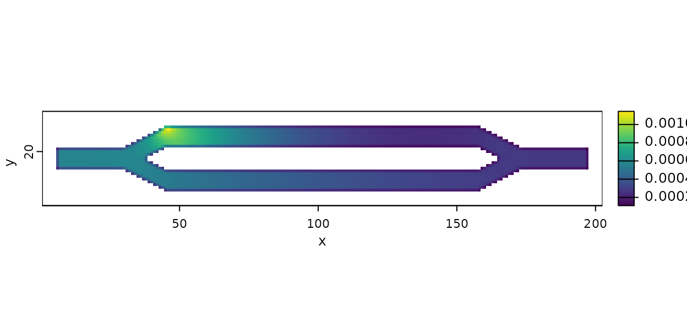
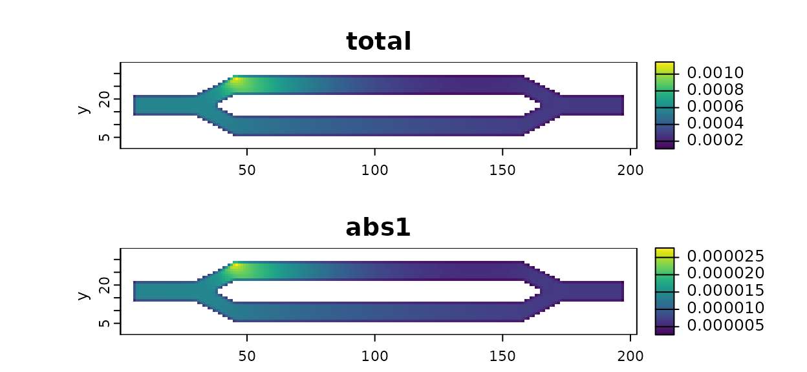
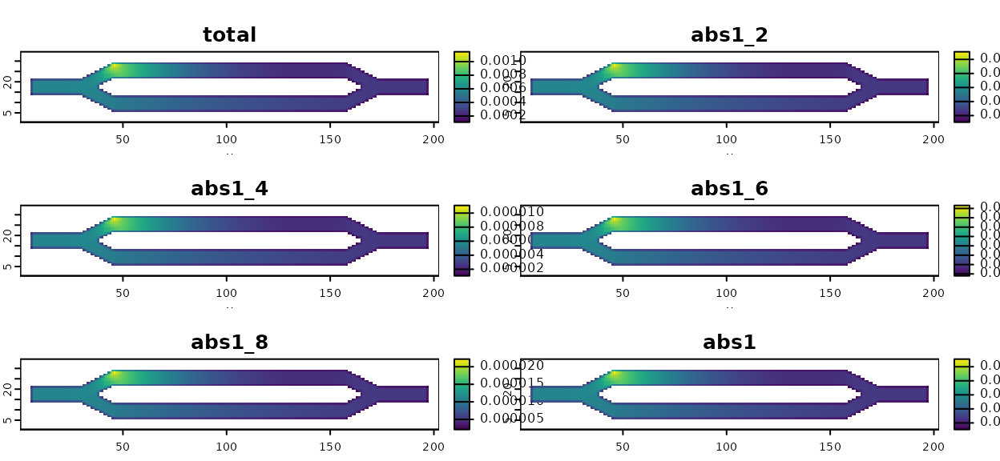

Multiple Absorption Tutorial
Andrew Marx
2021-10-22
Source:vignettes/tutorial-multiple-absorption.Rmd
tutorial-multiple-absorption.RmdIntroduction
Starting in v1.4.0, the samc package included support for multiple sources of absorption when creating an samc object. Additionally, when multiple sources of absorption are provided, the results of the mortality() metric are now decomposed into its individual and total components, which are returned in a named list. When only a single absorption input is provided, the function will work exactly like it did previously to maintain backwards compatibility with existing code.
Note: only the asymptotic (long-term) calculations are currently decomposed. The short-term mortality metrics still need to be updated.
Setup
For this example, we will use the example data included in the package, but will semi-randomly divide/decompose the absorption matrix into two separate layers. These layers are used for illustrative purposes and do not represent anything meaningful.
# First step is to load the libraries. Not all of these libraries are strictly
# needed; some are used for convenience and visualization for this tutorial.
library("raster")
library("samc")
library("viridisLite")
# "Load" the data. In this case we are using data built into the package.
# In practice, users will likely load raster data using the raster() function
# from the raster package.
res_data <- samc::ex_res_data
abs_data <- samc::ex_abs_data
occ_data <- samc::ex_occ_data
# Generate some random values that will be used as proportions for dividing the
# absorption data.
p1 <- runif(length(abs_data), max = 0.3)
p2 <- 1 - p1
# Divide our absorption data into two layers. When added together, these two
# layers should be identical to the original
abs_data_a <- abs_data * p1
abs_data_b <- abs_data * p2
all.equal(abs_data_a + abs_data_b, abs_data)
#> [1] TRUETotal (Single) Absorption
The use of multiple absorption layers is mainly of interest for the mortality() metric, which calculates the probability of absorption at different transient states or locations. By providing multiple absorption layers, we can tease apart the role that different sources of absorption might have in a model. To start, we will work with the total absorption.
# Setup the details for our transition function
tr <- list(fun = function(x) 1/mean(x), # Function for calculating transition probabilities
dir = 8, # Directions of the transitions. Either 4 or 8.
sym = TRUE) # Is the function symmetric?
# Create the samc object using the original "total" absorption layer
samc_obj <- samc(res_data, abs_data, tr_args = tr)
# Let's say we're interested in where absorption is expected to occur throughout
# the model if starting from a single location
mort <- mortality(samc_obj, origin = 1)
# When only working with total absorption, this version of mortality() returns
# a named vector
str(mort)
#> Named num [1:2624] 0.000783 0.000787 0.000704 0.000655 0.000621 ...
#> - attr(*, "names")= chr [1:2624] "1" "2" "3" "4" ...
# Let's visualize it
mort_map <- map(samc_obj, mort)
plot(mort_map, xlab = "x", ylab = "y", col = viridis(256))
Multiple Absorption
Since our data is a matrix object, we will provide the decomposed absorption layers in a list object. When using raster data, it would be provided as either a RasterStack or a RasterBrick. The layers in the list/RasterStack/RasterBrick can be named, which will carryover into the results, which can help with code readability when accessing different parts of the results.
# Let's attach absorption layers to our samc object
samc_obj$abs_states <- list(abs1 = abs_data_a,
abs2 = abs_data_b)
# Now rerun the analysis
mort_multiple <- mortality(samc_obj, origin = 1)
# Let's note the differences from what was returned before. Here, we have a list
# of named vectors. The first is for the total absorption. The last two are for
# the subdivided or decomposed absorption inputs
str(mort_multiple)
#> List of 3
#> $ total: Named num [1:2624] 0.000783 0.000787 0.000704 0.000655 0.000621 ...
#> ..- attr(*, "names")= chr [1:2624] "1" "2" "3" "4" ...
#> $ abs1 : Named num [1:2624] 2.16e-04 2.12e-04 1.48e-04 1.23e-05 1.14e-04 ...
#> ..- attr(*, "names")= chr [1:2624] "1" "2" "3" "4" ...
#> $ abs2 : Named num [1:2624] 0.000568 0.000576 0.000556 0.000643 0.000507 ...
#> ..- attr(*, "names")= chr [1:2624] "1" "2" "3" "4" ...
# Let's visualize it
multiple_map <- map(samc_obj, mort_multiple)
multiple_map <- raster::stack(multiple_map) # Convert the list to a RasterStack for plotting
plot(multiple_map, xlab = "x", ylab = "y", col = viridis(256), nc = 1, nr = 3)
# Let's check some things.
#First, the results of the decomposed layers in the list should add up to the total result
all.equal(multiple_map[[1]], multiple_map[[2]] + multiple_map[[3]])
#> [1] TRUE
# Alternatively, we could use the layer names:
all.equal(multiple_map$total, multiple_map$abs1 + multiple_map$abs2)
#> [1] TRUE
# Second, notice in the plots above that the result for the single input and the total
# result for the multiple input look very similar? That's because they are identical
all.equal(mort, mort_multiple$total)
#> [1] TRUEPartial Absorption Data
In the above code, the decomposed absorption data sums to the total absorption data. This is not strictly necessary, and the decomposed absorption data can consist of any number of inputs. These inputs are treated independently of one another by the package. This is potentially useful in at least two different situations.
The first situation is where we are only interested in the results for a subset of the absorption components. In other words, there might be multiple sources of absorption contributing to the total overall absorption used to create the samc object, but our analysis might be only interested in learning about one of them. In that case, we only need to supply the absorption probabilities for what we are interested in; the others can be excluded.
# Let's say we are interested in just the first component we created above
samc_obj$abs_states <- list(abs1 = abs_data_a)
mort_partial <- mortality(samc_obj, origin = 1)
# Let's visualize it. Note that the results are the same as before, just without
# the second component.
partial_map <- map(samc_obj, mort_partial)
partial_map <- raster::stack(partial_map) # Convert the list to a RasterStack for plotting
plot(partial_map, xlab = "x", ylab = "y", col = viridis(256), nc = 1, nr = 3)
The second situation is where we might have multiple candidate models for a particular source of absorption. Rather than running the analysis once for every candidate, we can simply include them all and run the analysis once.
# Create multiple versions of our first component. This might represent multiple
# models or hypotheses we want to explore
samc_obj$abs_states <- list(abs1_2 = abs_data_a * 0.2,
abs1_4 = abs_data_a * 0.4,
abs1_6 = abs_data_a * 0.6,
abs1_8 = abs_data_a * 0.8,
abs1 = abs_data_a)
mort_models <- mortality(samc_obj, origin = 1)
# Let's visualize it. Note that the results are not particularly interesting visually;
# the only difference between these models is the scale
models_map <- map(samc_obj, mort_models)
models_map <- raster::stack(models_map) # Convert the list to a RasterStack for plotting
plot(models_map, xlab = "x", ylab = "y", col = viridis(256), nc = 1, nr = 3)
Calculating Total Absorption From Individual Components
Up to this point, total absorption in our examples is assumed to have already been known. One possibility is that total absorption is known or estimated directly from empirical data. This section, however, comments on the situation where it’s the individual absorption components (e.g., different sources of absorption) that have been directly measured or estimated, and now the user is in a situation where they need to combine that data into total absorption that they can use as input into the samc() function. Ultimately, any number of arbitrary mathematical functions could be used to combine the individual components into a total absorption. As a starting point, however, users may want to think about how their data fits into probability theory.
Let’s say we have two possible sources of absorption \(A\) and \(B\). If they cannot occur at the same time, they are mutually exclusive, or disjoint, events. An example of this might be a deer dispersing across a landscape that can die to either predation or road mortality (hit by a vehicle). In this case, both types of absorption result in death of the deer, and since a deer cannot die twice, this means that both types of absorption are mutually exclusive. Under the rules of probability, we can then calculate our total absorption as \(P(A\text{ or }B) = P(A) + P(B)\) where \(P(A) = \text{Probability of Predation}\) and \(P(B) = \text{Probability of Road Mortality}\).
More complex scenarios are possible. It’s conceivable that there might be situations where two or more or different sources of absorption can occur simultaneously. In this case, the total absorption could be calculated as \(P(A\text{ or }B) = P(A) + P(B) - P(A)P(B)\). When interpreting results using multiple absorption in the package, the results for \(P(A)P(B)\) can be calculated either by providing the absorption sources \(A\) and \(B\) and then multiplying their results after the analysis, or absorption sources \(A\) and \(B\) can be pre-multiplied into a single absorbing state which is then used as an absorbing state for the analysis.